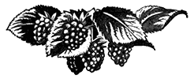

Малина

Хозяйственное значение малины
Культура малины в СССР имеет большое распространение. В некоторых районах промышленное значение её очень велико.
Так, по данным переписи садов 1945 г. в РСФСР малина занимает первое место среди насаждений ягодных культур (39,1%); на Украине насаждения малины занимают второе место после земляники.
В дореволюционной России культура малины была сосредоточена, главным образом, около крупных промышленных центров, в окрестностях Москвы, Петрограда (Ленинграда), Киева, Харькова и других больших городов. Здесь она культивировалась на приусадебных участках, принадлежащих зажиточным крестьянским хозяйствам, и на участках предпринимателей-садоводов.
В настоящее время, с развитием крупного социалистического сельского хозяйства, в связи с ростом перерабатывающей промышленности, созданы условия для более широкого развития культуры малины. Сейчас малина проникла в те районы страны, где раньше её не культивировали.
Малина культивируется на севере — в Архангельской, Вологодской и Мурманской областях, на Урале и в Сибири. По переписи садов в 1945 г., на Урале культура малины занимает до 53,7% площади ягодных насаждений, в Западной Сибири — до 63,7% и в Восточной Сибири — 41,8%.
Наиболее благоприятными условиями для промышленной культуры малины являются районы средней полосы Союза ССР. В Северных и северо-восточных районах малина страдает от зимних морозов, а в районах Поволжья и юга — от засухи.
Сорта, культивируемые в промышленных насаждениях, по происхождению принадлежат, главным образом, к европейской красной малине (R. idaeus subsp. vulgatus Arrhen.) и щетинистой американской малине (R. idaeus subsp. strigosus Mchx.). Широко распространёнными сортами являются: Мальборо, Турнер, Усанка; дополнительно к этим сортам в средней полосе культивируют Волжанку, Фастольф, Кутберт и на Северном Кавказе — Ремонтантную Бильярда.
Что же касается сортов чёрной ежевикообразной малины (R. occidentalis L.) и пурпуровой (R. neglectus Peck.), то они у нас не получили широкого распространения и пока произрастают только на экспериментальных базах опытных учреждений и у отдельных любителей-садоводов.
Малина имеет ряд ценных производственно-биологических свойств, способствующих быстрому её внедрению в производство. Она быстро и легко размножается корневыми отпрысками без особых на это затрат. С одного гектара эксплуатационной малины можно получить посадочного материала на 10 га новых посадок.
Малина рано вступает в пору плодоношения и даёт высокие урожаи. В период полного плодоношения, при хорошем агротехническом уходе, малина даёт до 8–10 т ягод с гектара. Кроме того, малина — прекрасное медоносное растение.
Ягоды малины отличаются не только высокими вкусовыми качествами, но и обладают ценными пищевыми свойствами. Человек, потребляя малину в свежем виде, получает значительное количество углеводов и органических кислот. Ягоды малины содержат, в зависимости от сорта, 4,56–10,67% сахаров, при кислотности 1,13–1,97%. Семена малины содержат до 14% жира. Вместе с тем малина относится к растениям, бедным по содержанию витаминов.
Малина находит применение для потребления в свежем виде и, главным образом, идёт для переработки. Из ягод малины приготовляют варенье, желе, мармелад, карамельную начинку, соки, сиропы, наливки и т. д. Малина нашла применение и в медицине. Так, сироп из ягод малины используют для приготовления микстур, а сушёная малина служит хорошим потогонным средством.
История культуры
Установить начало истории культуры малины трудно, но, по-видимому, она была известна ещё древним народам, так как семена малины были найдены при раскопках, относящихся к каменному и бронзовому веку.
Первые литературные указания о малине можно найти у древних писателей. Плиний Старший, живший в I веке нашей эры, говорит о дикой малине, росшей на горе Иде в Средней Азии. Основываясь на этом, Плиний и дал малине название Rubus idaeus. Палладиус, римский писатель IV века, уже называет малину садовым растением.
Малина была хорошо известна римлянам и грекам, которые собирали её в лесах, употребляя ягоды не только для стола, но и как радикальное средство против некоторых болезней. Настойка же цветков малины считалась хорошим средством против укуса змей и скорпионов.
Начало культуры малины в Западной Европе относится к XVI в.
Развитие культуры малины связано с внедрением в культуру диких видов — европейской красной малины (R. idaeus subsp. vulgatus Arrhen.) и американской щетинистой малины (R. idaeus subsp. strigosus Mchx.).
Широкое развитие культура малины получила в XIX веке. Этот период характеризуется массовым появлением культурных сортов малины. Если в 1831 г. в литературе имелись указания о 12 сортах, то после 1860 г. было описано 150 сортов. К этому периоду относится появление сортов ежевикообразной чёрной малины (R. occidentalis L.) и пурпуровой малины (R. neglectus Peck.).
В России малина была известна с давних времён как дикорастущее растение.
Имеются указания, что основатель Москвы Юрий Долгорукий был большим любителем садоводства, и малина росла в окрестностях Москвы в таком количестве, что в густых, непроходимых малинниках часто укрывались даже медведи. В древней Руси малина славилась как потогонное средство, а кроме того, по утрам вместо чая пили так называемый взварец, приготовленный из малины и клюквы.
В XVII в. в вотчине боярина Романова, в его подмосковном селе Измайлове, был посажен сад, где вместе с другими ягодными кустарниками росла и малина. К XVII в. относится устройство в Москве верхнего и нижнего набережного сада, где также росла малина.
Сведения о сортах малины впервые появились у нас в начале XIX в.
В 1803 г. напечатано было «Подробное руководство к заведению плодовитых деревьев для нашего северного климата», сочинённое Германом Цигрю в Риге. В этом руководстве говорилось, что у автора книги имеются английский крыжовник, смородина и кусты малины. Тот же автор в 1828 г. выпустил «Новый подробный каталог плодовитым деревьям и фруктовым кустарникам в Риге». В этом каталоге предлагалось 3 сорта малины: Большая красная кильская, Большая жёлтая мальтийская и Большая американская.
Последующие сведения о сортах малины встречаются в 1848 г. в книге Н. Красноглазова, где он указывал о сортах красной, жёлтой и чёрной малины. Таким образом, к половине прошлого столетия в России разводили уже ряд сортов малины.
Но культивируемый сортимент был беден, он состоял из небольшого числа сортов, часто малоценных. Только отдельные сорта представляли хозяйственную ценность; некоторые из них культивируются и до настоящего времени. К таким сортам относится отечественный русский сорт Усанка и американский Мальборо.
Широкое развитие сортимент ягодных культур, в том числе и малины, получил в условиях Советского Союза. Подтверждением этого могут служить следующие данные. Если по районированию 1931 г. было принято в стандартный сортимент 9 сортов малины по всему СССР, то в 1945 г. только по РСФСР утверждено 53 сорта. Новый промышленный сортимент малины увеличился почти в 9 раз. В то же время он вырос качественно. Стандартный сортимент пополнился новыми, высококачественными сортами отечественной селекции, выведенными И. В. Мичуриным, Кузьминым, Спириным, Московской опытной станцией и другими научными учреждениями.
Систематика малины
Малина относится к роду Rubus семейства розоцветных (Rosaceae). Род Rubus включает около 120 видов, которые распространены во всех странах света.
Рис. 456. Ареал распространения рода Rubus.
В культуре известны сорта следующих четырёх видов:
- европейская красная малина (R. idaeus subsp. vulgatus Arrhen.);
- щетинистая американская малина (R. idaeus subsp. strigosus Mchx.);
- чёрная ежевикообразная малина (R. occidentalis L.);
- пурпуровая малина (R. neglectus Peck.)
Европейская красная малина (R. idaeus subsp. vulgatus Arrhen.)
Рис. 457. Малина европейская.
1 — кисть с плодами; 2 — цветок сбоку; 3 — цветок сверху; 4 — плод
- Представляет многолетний кустарник с дуговидными или слегка отклонёнными побегами и многолетним корнем.
- Побеги шиповатые, в раннем возрасте с желёзками, которые впоследствии исчезают. Однолетние побеги зелёные, двулетние — серо-коричневые.
- Листья непарноперистые с 3–5 листочками у однолетних побегов и с 3 листочками у двулетних. Листочки овальные или широколанцетовидные. Края листочков неравно пильчатые. Поверхность листовой пластинки слабо морщинистая, слегка скрученная или плоская, опушённая или голая. Нижняя сторона беловойлочная.
- Соцветие — кисть.
- Цветки обоеполые.
- Чашелистики горизонтальные или отогнутые вниз.
- Пестики выше тычинок или наравне с ними.
- Плод — сложная костянка, обычно тёмно-красного цвета, иногда жёлтого, продолговатой или шаровидной формы. Размножается семенами и корневыми отпрысками.
Распространена по всей Европе и частично в Азии. В СССР растёт повсеместно в лесной зоне до полярного круга и на юге.
В культуре данный вид известен давно. Первое упоминание о нём в литературе относится к середине XVI в.
В Америку был завезён европейскими колонизаторами, где он до середины XIX в. являлся единственным видом, положившим начало культурным сортам.
В 1867 г. было описано до 67 сортов.
Чисто европейские сорта малины в настоящее время вытеснены из культуры более выносливыми и урожайными сортами.
Американская щетинистая красная малина (R. idaeus subsp. strigosus Mchx.)
Рис. 458. Малина американская.
1 — кисть с плодами; 2 — цветок сбоку; 3 — цветок сверху; 4 — плод
- Многолетний кустарник с отклонёнными и реже дуговидными двулетними побегами, многолетними корнем и корневищем. Однолетние и двулетние побеги шиповатые и желёзистые. Однолетний побег зеленовато-пурпуровый, двулетний — красновато-коричневый.
- Листья непарноперистые, с 3–5 листочками у однолетних стеблей и с тремя листочками у двулетних, листочки овально-ланцетовидные. Края листочков неравномерно пильчатые. Пластинка листа морщинистая, скрученная или плоская, опушённая или почти голая. Нижняя поверхность беловойлочная.
- Соцветие — кисть.
- Цветки обоеполые с двойным околоцветником.
- Чашелистики горизонтально отклонённые или охватывающие плод.
- Пестики выше тычинок или наравне с ними.
- Плод — сложная костянка, красной или тёмно-розовой, иногда розовой окраски, полушаровидной формы, легко отстающий от цветоложа, опадающий. Размножается семенами и корневыми отпрысками.
Вид распространён в Северной Америке. Отличается большой выносливостью и урожайностью. Широкое внедрение в культуру американская красная малина получила в первой половине XIX в.
Ежевикообразная чёрная малина (R. occidentalis L.)
Рис. 459. Малина ежевикообразная.
1 — кисть с плодами; 2 — цветок сбоку; 3 — цветок сверху; 4 — плод
По морфологическим и производственным признакам резко отличается от двух предыдущих видов.
- Многолетний кустарник с аркообразно свешивающимися побегами, покрытыми толстыми загнутыми шипами.
- Однолетний побег зелёный с сильным сизым или почти лиловым восковым налётом. Двулетние побеги тёмнокоричневые с лиловым налётом.
- Листья непарноперистые. Листочков у однолетних побегов 3–5, у двулетних — 3. Листочки овальные, остроконечные. Края листа остропильчатые. Поверхность пластинки слабо морщинистая или скрученная, с нижней стороны беловойлочная.
- Соцветие в виде щитка, компактное.
- Цветки обоеполые с двойным околоцветником.
- Чашелистики при плоде отогнуты вниз.
- Пестики наравне или ниже тычинок.
- Плод — сложная костянка, чаще чёрного, иногда жёлтого цвета полушаровидной формы, легко отстающий от цветоложа. Размножается семенами и верхушечными почками.
Распространён в Северной Америке.
Пурпуровая малина (R. neglectus Peck.)
Рис. 460. Малина пурпуровая.
1 — кисть с плодами; 2 — цветок сбоку; 3 — цветок сверху; 4 — плод
- Многолетний кустарник с глубоко идущей в почву корневой системой.
- Однолетние побеги ветвистые со свешивающимися аркообразно верхушками, зелёные, с сизым восковым налётом; двулетние побеги сильно отклонённые, красновато-коричневые с лиловым налётом, покрытые длинными, тонкими или более короткими, толстыми шипами.
- Листья непарноперистые, у однолетнего побега 3–5 листочков, у двулетнего — 3. Листочки овальные, остроконечные. Пластинка листа более или менее морщинистая и скрученная, верхняя поверхность опушённая или голая, нижняя беловойлочная. Края листочков двоякопильчатые.
- Соцветие — кисть.
- Чашелистики горизонтальные или приподнятые вверх.
- Пестики наравне или несколько выше тычинок.
- Плод — сложная костянка, тёмно-пурпурового цвета, иногда жёлто-розового, полушаровидной формы, легко отстаёт от плодоложа. Размножается семенами, корневыми отпрысками и верхушечными почками.
Пурпуровая малина отличается высокой урожайностью. Начало её культуры относится к 1835 г., когда близ Филадельфии (Пенсильвания) был найден сорт, названный Филадельфия, являющийся до сих пор одним из ценных промышленных сортов пурпуровой малины. В 1871 г. около Скотевилля (Нью-Йорк) был найден сорт Шаффера колоссальная. Этот вид малины получил в последнее время большое значение благодаря развитию технической переработки. Ягоды сортов пурпуровой малины являются лучшим сырьём для консервирования, а также изготовления джема и сухого варенья.
Указанные виды явились родоначальными формами культурных сортов малины. Кроме этих видов, в последнее время в селекционных работах широко используется сибирский подвид — R. idaeus L. subsp. melanolasius Focke — сибирская красная малина, но практических результатов пока ещё не получено.
Различие сортов малины по морфологическим признакам
При определении сортов малины необходимо руководствоваться рядом признаков, характеризующих сорт, так как по отдельным из них сорта могут быть сходны между собой. Сорта малины различаются между собой по признакам куста, побегов, шипов, листа, цветка и ягоды.
Куст
Кусты у различных сортов малины имеют характерные различия.
По высоте куст может быть:
По направленности роста побегов кусты могут быть:
- сжатые,
- полураскидистые,
- с аркообразно свешивающимися ветвями.
Сжатые кусты характерны для сортов, происшедших от американской малины (Мальборо, Турнер). Полураскидистые кусты характерны для сортов, происшедших от европейской малины (Усанка, Волжанка, Английская). Кусты с аркообразно свешивающимися побегами характерны для сортов, происшедших от американской ежевикообразной чёрной малины (Канзас), и сортов, происшедших от пурпуровой малины (Шаффера колоссальная).
Рис. 462. Куст средне раскидистый (сорт Кутберт).
Важным признаком также служит побегопроизводительность кустов. Одни сорта способны давать большое количество отпрысков (Прогресс, Мальборо), другие дают небольшое или среднее количество корневых отпрысков (Усанка, Новость Кузьмина, Волжанка).
Все указанные признаки куста в значительной степени зависят от условий произрастания (почвы, влаги, агротехники и размещения растений), которые необходимо учитывать при определении сорта.
Побеги
Побеги при определении сортов малины имеют большое значение. При этом необходимо учитывать признаки двухгодичных и одногодичных побегов.
Наиболее существенным признаком, по которому различаются двухгодичные побеги, является окраска.
Окраска бывает:
- серовато-коричневая (Корнуэльская Виктория, Новость Кузьмина),
- коричневая (Прогресс, Мальборо, Фастольф),
- сероватая (Усанка, Калужанка, Английская),
- красновато-коричневая (Кинг, Кримзон Маммут, Герберт).
Характерным признаком двухгодичного побега также являются шипы, их количество и расположение. Шипы могут быть равномерно расположены по всему побегу (Английская, Кутберт), но чаще всего они распределяются неравномерно. Многие сорта имеют шипы при основании побега, а к верхушке они почти отсутствуют (Мальборо, Турнер, Калининградская) или их значительно меньше (Усанка, Калужанка).
Шипы, в свою очередь, различаются по длине:
- длинные (Герберт),
- средней длины (Английская),
- короткие (Фастольф);
по основанию шипа:
- шипы могут быть с основанием (Английская, Новость Кузьмина, Волжанка),
- без основания (Мальборо, Турнер),
а также прямые, изогнутые, жёсткие, мягкие. Цвет шипов двухгодичных побегов чаще всего бывает той же окраски, что и побег.
Побеги могут быть:
- коленчатые,
- прямые.
Примером коленчатых побегов могут быть сорта Усанка, Волжанка, Новость Кузьмина и с прямыми побегами — Мальборо, Турнер, Прогресс. Одногодичные побеги обычно зелёные, к осени они приобретают различные оттенки, характерные для сорта.
Шипы на однолетних побегах по окраске могут быть:
- тёмно-пурпуровые (Волжанка, Новость Кузьмина),
- пурпуровые (Усанка),
- бледно-пурпуровые (Кутберт),
- светло-зелёные (Корнуэльская Виктория).
К довольно постоянным признакам можно отнести опушение побегов. Опушение бывает простое и желёзистое. Желёзки можно видеть на концах волосков в виде утолщения, однако встречаются сорта и без опушения. Опушённые побеги имеют сорта Усанка, Калужанка.
Помимо опушения, на побегах может быть восковой налёт.
По степени воскового налёта побеги различаются:
- с сильным восковым налётом (Турнер, Кримзон Маммут),
- со средним восковым налётом (Прогресс, Новость Кузьмина),
- со слабым восковым налётом (Мальборо).
Лист
Листья у сортов малины весьма характерны по своим признакам. Они изменяются по форме, величине, окраске, по количеству листочков на листе, опушению верхней поверхности, матовости, блеску, по степени морщинистости и скрученности.
По форме листья сильно варьируют не только в пределе различных сортов, но и в пределе одного куста.
Характерным признаком для определения сорта является форма конечного среднего листочка листовой пластинки.
Средний листочек по форме может быть:
- яйцевидный (Новость Кузьмина),
- округлый (Турнер),
- продолговатоовальный (Кутберт).
По величине листья бывают:
По окраске листья могут быть:
Листья имеют 3 или 5 листочков. Листья, расположенные на двухгодичных плодоносящих побегах, обычно имеют 3 листочка; на одногодичных побегах у большинства сортов встречаются листья с тремя и пятью листочками.
Опушение верхней поверхности листовой пластинки у сортов малины может быть:
- сильное (Волжанка),
- среднее (Новость Кузьмина),
- слабое (Мальборо),
- совсем отсутствовать (Турнер).
Нижняя поверхность листа имеет беловатую и реже зеленоватую окраску. Листья с беловатой окраской обычно бывают сильно опушены; у сортов с зелёной окраской листа опушение меньше.
Матовость и блеск листовой пластинки зависят от степени опушения.
Пластинка листа может быть:
- гладкой (Турнер),
- морщинистой (Фастольф),
- скрученной (Калининградская).
По степени морщинистости и скрученности листья могут быть слабо, средне и сильно морщинистые и скрученные.
Зубчики по краям листочков, по степени их заострённости, бывают:
- острыми,
- средне острыми,
- тупыми.
Черешок листа может быть более или менее густо опушённым или без опушения. Вместо опушения на черешке листа может быть восковой налёт различной степени интенсивности. На черешке листа могут быть расположены шипы в большем или меньшем количестве.
Цветки
Цветки варьируют по величине, форме, загнутости чашелистиков и по соотношению в длине пестиков и тычинок.
По величине различают цветки:
Чашелистики могут быть:
- длинными,
- средними,
- короткими.
Для европейской малины характерным признаком является загнутость чашелистиков вниз после цветения, которые в некоторых случаях остаются горизонтальными. Для американской красной малины у большинства сортов чашелистики поднимаются вверх или охватывают ягоду. Чашелистики могут быть опушёнными и не опушёнными.
В отношении длины тычинок и пестиков сорта имеют или пестики равные по длине тычинкам (Турнер) или несколько превышающие их (Новость Кузьмина, Прогресс).
Соцветие
Цветки у сортов малины располагаются по всей плодоносящей веточке или группируются на её верхушке (Канзас).
В зависимости от длины цветоножек и их расположения соцветие может быть:
- сжатое,
- раскидистое.
Цветки на коротких цветоножках образуют более или менее сжатое соцветие (Мальборо, Калининградская, Фастольф, Викинг).
Рис. 463. Соцветие компактное (сорт Викинг).
Цветки на длинных цветоножках расположены более свободно и образуют в той или иной степени раскидистое соцветие (Новость Кузьмина, Усанка, Турнер).
Рис. 461. Соцветие раскидистое (сорт Новость Кузьмина).
Ягоды
Ягода малины — сложная костянка. Она состоит из маленьких костянок, более или менее плотно сцепленных между собою и прикреплённых к плодоложу. Каждая костянка представляет собой семя, окружённое мякотью.
Признаки ягоды являются наиболее характерными для определения сорта. В некоторых случаях без ягод определить сорт бывает трудно.
Ягоды сортов малины различают по величине, форме, окраске, блеску, опушению, по величине костянок, плотности их сцепления между собою и плотности прикрепления к плодоложу.
По величине ягод сорта могут быть:
- крупноплодные (Английская, Прогресс, Калининградская),
- со средней величиной ягод (Мальборо, Усанка, Новость Кузьмина),
- мелкоплодные (Турнер).
По форме ягоды бывают:
- тупоконические (Турнер),
- широко-тупо-конические (Калининградская),
- округлые (Мальборо, Кримзон Маммут),
- округло-овальные (Кутберт),
- удлинённые (Английская),
- полушаровидные (Кинг, Фастольф),
- неправильно продолговатые (Ремонтантная Бильярда),
- конические (Сеянец Спирина № 4).
По окраске сорта малины резко делятся на 3 группы:
- красноплодные,
- белоплодные,
- черноплодные.
В стандартном сортименте значительная часть сортов представлена красноплодными сортами. Белоплодная малина представлена незначительным числом сортов (Спирина белая, Корнуэльская Виктория). Черноплодные сорта распространены ещё менее белоплодных (Канзас, Грейгг). В пределах этих трёх групп ягоды могут быть с различными оттенками.
Блеск ягод у сортов малины выражен неярко, он в большей степени зависит от их опушения.
Опушение ягод может быть:
Костянки могут быть более или менее крупными (Герберт, Калининградская) и мелкими (Турнер, Кутберт), однородной величины и неоднородной. Однородная величина костянок придаёт ягоде правильную форму. На костянках у многих сортов имеется ясно выраженная продольная бороздка (Кримзон Маммут, Фастольф).
Прочность сцепления костянок имеет значение не только для определения сорта, но и большое хозяйственное значение. При слабом сцеплении костянок, ягоды при сборе рассыпаются. Среди стандартных сортов это явление иногда наблюдается у сортов Мальборо, Корнуэльская Виктория. Прочность прикрепления костянок к плодоложу различна.
Костянки могут быть:
- плотно прикреплены (к этой группе относится большинство стандартных сортов),
- слабо прикреплены (Кинг).
По вкусу ягод сорта могут быть:
- кисло-сладкие (Усанка, Калининградская),
- кисло-сладкие с преобладанием кислоты (Английская, Прогресс, Техас),
- кисло-сладкие с преобладанием сладости (Викинг, Турнер).
Общая оценка вкуса ягод может быть:
- плохая,
- посредственная,
- хорошая,
- очень хорошая,
- превосходная.
Сравнительная характеристика сортов малины по важнейшим производственно-биологическим признакам
Цветение и созревание
От начала вегетации до начала цветения сортов малины проходит 45–50 дней:
- в условиях Москвы малина обычно цветёт 4–12 июня;
- в Мичуринске — 2–10 июня;
- в условиях Ленинграда и Челябинска — 15–23 июня;
- в Новосибирске и Красноярске — 17–25 июня;
- в Саратове — в конце мая — начале июня;
- в Крыму и на Северном Кавказе — 10–15 мая.
Разница между началом цветения самого раннего сорта и самого позднего 6–8 дней. Продолжительность периода цветения сорта равняется 20–25 дням.
По срокам цветения сорта малины делят на:
- ранние,
- поздние.
К группе раноцветущих относятся:
К группе поздноцветущих:
Малина зацветает поздно, примерно через 45–50 дней после начала распускания почек.
По времени созревания сорта делятся на:
- ранние,
- средние,
- поздние.
Ниже приводим таблицу распределения сортов малины по срокам созревания (см. табл. 101).
Распределения сортов малины по срокам созревания
| Раносозревающие | Среднесозревающие | Поздносозревающие |
|---|---|---|
Период от начала цветения до начала созревания ягод 25–30 дней. Разница в начале созревания между ранними и поздними сортами 8–10 дней:
- в условиях Москвы малина созревает в половине июля;
- в Мичуринске — в конце июня — начале июля;
- в Ленинграде — 15–27 июля;
- на Урале и в Сибири (Челябинск, Новосибирск, Красноярск) — в конце второй декады июля;
- на юге (Крым, Северный Кавказ) — в половине июня.
Зимостойкость
По зимостойкости сорта сильно разнятся между собой. Зимостойкость находится в тесной связи с происхождением сорта. Так, например, сорта, родоначальниками которых являются европейская красная малина (R. idaeus subsp. vulgatus Arrhen) и американская красная малина (R. idaeus subsp. strigosus Mchx.) более зимостойкие, чем сорта, принадлежащие к чёрной американской малине (R. occidentalis L.) и к американской пурпуровой малине (R. neglectus Peck.). Сорта чёрной и пурпуровой малины можно культивировать только в южных районах СССР. Недостаточно зимостойкой также является группа ремонтантных сортов. Ремонтантные сорта наиболее пригодны для культуры в условиях юга, где они способны дать 2 равноценных урожая — летний и осенний. В районах средней и северной полос осенний урожай ремонтантных сортов обычно не вызревает, попадая под заморозки. Вместе с этим невызревшие однолетние побеги сильно повреждаются зимними морозами.
По зимостойкости сорта малины распределяются на:
- зимостойкие,
- среднезимостойкие,
- недостаточно зимостойкие.
Ниже приводим группы распределения стандартных сортов малины по зимостойкости (см. табл. 102).
Распределение стандартных сортов малины по зимостойкости
| Зимостойкие | Среднезимостойкие | Недостаточно зимостойкие |
|---|---|---|
|
Феникс |
Голландская красная Грейгг Обыкновенная Ранняя Тамсона Рижская Гриднева Руби Скороспелка Сюперлятив Шарташская |
Белая ананасная Горнет |
Урожайность
По урожайности сорта малины делят на урожайные, среднеурожайные и недостаточно урожайные. Урожайность сортов колеблется от 2,5 до 8 т с гектара. На основании данных Всесоюзного института растениеводства, Института плодоводства им. Мичурина, опытных станций и опорных пунктов стандартные сорта по урожайности распределяются на следующие группы.
Распределение сортов малины по урожайности
(на основании данных Всесоюзного института растениеводства и Института плодоводства им. Мичурина)
| Урожайные | Среднеурожайные | Недостаточно урожайные |
|---|---|---|
Товарные и потребительские качества ягод
По вкусу сорта малины делят на:
- десертные,
- столовые,
- технические.
К группе десертных сортов относят:
- белоплодные сорта:
- из красных сортов:
К столовым сортам относят:
- Вислуху,
- Герберт,
- Колхозницу,
- Кримзон Маммут,
- Мальборо,
- Урожайную,
- Голиаф,
- Кутберт,
- Сеянцы Спирина №1, №2, №4.
К группе технических сортов относят:
- Английскую,
- Канзас,
- Прогресс,
- Изобильную (ежевику),
- Техас,
- Шаффера колоссальную.
По величине плодов сорта, вошедшие в стандартный сортимент, можно распределить на:
- крупноплодные,
- средне-крупноплодные,
- мелкоплодные.
К группе крупноплодных сортов относят:
- Английскую,
- Изобильную (ежевику),
- Техас,
- Колхозницу,
- Прогресс,
- Калининградскую,
- Русскую,
- Урожайную.
Средне-крупноплодные:
- Волжанка,
- Викинг,
- Герберт,
- Кримзон Маммут,
- Новость Кузьмина,
- Мальборо,
- Усанка,
- Кутберт,
- Фастольф,
- Корнуэльская Виктория,
- Спирина белая,
- Ремонтантная Бильярда,
- Шаффера колоссальная,
- Сеянцы Спирина № 1, № 2, № 4.
К сортам с мелкими ягодами относится Турнер.
Химический состав ягод
Химический состав ягод изучен ещё недостаточно. Имеются только отдельные данные по различным сортам. За основные характерные признаки для сорта принимают содержание сахаров и кислотность.
Содержание сахаров и кислотность — изменчивый признак, который зависит от многих факторов — климатических, почвенных и агротехнических условий произрастания сорта. Химический состав ягод колеблется в пределах вида и сорта.
По данным биохимической лаборатории Всесоюзного института растениеводства, содержание сахара и кислоты в сортах европейской и американской малины следующее.
Содержание сахара и кислоты в сортах европейской и американской малины
(по данным биохимической лаборатории Всесоюзного института растениеводства)
| Сорта малины | Общее количество сахаров (в %) | Свободная кислота (в %) |
|---|---|---|
| Европейская малина | 4,56—9,54 | 1,13—1,97 |
| Американская малина | 4,94—10,67 | 1,62—1,96 |
Химический состав ягод различных сортов колеблется в зависимости от климатических условий. Это подтверждается данными химического анализа, проведённого в различных географических точках по сорту Турнер.
Отношение сахара к кислоте в ягодах сорта Турнер по городам:
- Краснодар — 8,10
- Мичуринск — 7,58
- Красноярск — 6,37
- Ленинград — 5,85
- Саратов — 4,10
Приведённые данные показывают, что наибольшая сахаристость по сорту Турнер получена в условиях Краснодара и самая низкая — в условиях Саратова.
Сравнивая данные химического анализа по другим сортам, мы видим значительное повышение содержания кислоты в условиях Саратова:
- Саратов — от 1,66 до 2,63%
- Ленинград — от 1,51 до 2,14%
- Красноярск — от 1,20 до 1,89%
- Мичуринск — от 1,05 до 1,87%
- Краснодар — от 0,97 до 2,0%
Ниже приводим данные химического анализа сортов, полученные Всесоюзным институтом растениеводства (Ленинград), Институтом плодоводства им. Мичурина (Мичуринск) и опытными плодово-ягодными станциями — Саратовской, Красноярской, Краснодарской (см. табл. 104).
Химический состав ягод сортов малины
(по данным Всесоюзного института растениеводства (г. Ленинград), Института плодоводства им. Мичурина (г. Мичуринск) и опытных плодово-ягодных станций — Саратовской, Красноярской, Краснодарской)
| Название сортов | Место анализа сортов | Кислотность (в %) |
Общее количество |
Отношение сахара |
|---|---|---|---|---|
| Английская | Институт им. Мичурина | 1,78 | 7,97 | 4,50 |
| Английская | Всесоюзный институт растениеводства | 2,14 | 7,51 | 3,50 |
| Английская | Саратовская ЗОС | 2,63 | 6,68 | 2,54 |
| Викинг | Институт им. Мичурина | 1,50 | 7,76 | 5,14 |
| Викинг | Красноярская оп. станция | 1,89 | 7,94 | 4,20 |
| Герберт | Всесоюзный институт растениеводства | 2,02 | 6,47 | 3,20 |
| Голиаф | Всесоюзный институт растениеводства | 1,50 | 8,10 | 5,40 |
| Горнет | Всесоюзный институт растениеводства | 1,65 | 7,02 | 4,25 |
| Жёлтая Спирина | Саратовская ЗОС | 1,93 | 8,08 | 4,18 |
| Калининградская | Всесоюзный институт растениеводства | 1,60 | 7,11 | 4,45 |
| Кутберт | Красноярская оп. станция | 1,88 | 9,64 | 5,12 |
| Кутберт | Всесоюзный институт растениеводства | 1,69 | 9,04 | 5,34 |
| Кутберт | Красноярская оп. станция | 1,91 | 7,35 | 3,84 |
| Кутберт | Саратовская ЗОС | 2,01 | 7,47 | 3,41 |
| Кримзон Маммут | Красноярская оп. станция | 1,67 | 8,33 | 4,98 |
| Кримзон Маммут | Всесоюзный институт растениеводства | 1,90 | 4,90 | 2,57 |
| Кримзон Маммут | Саратовская ЗОС | 2,37 | 6,07 | 2,56 |
| Кинг | Всесоюзный институт растениеводства | 1,84 | 5,81 | 3,15 |
| Кинг | Красноярская оп. станция | 1,54 | 7,19 | 4,67 |
| Кинг | Саратовская ЗОС | 2,18 | 6,18 | 2,83 |
| Калужанка | Саратовская ЗОС | 2,17 | 6,77 | 3,12 |
| Корнуэльская Виктория | Саратовская ЗОС | 2,19 | 7,96 | 3,63 |
| Мальборо | Красноярская оп. станция | 1,31 | 6,80 | 5,12 |
| Мальборо | Всесоюзный институт растениеводства | 1,44 | 7,71 | 5,40 |
| Мальборо | Институт им. Мичурина | 1,51 | 7,40 | 4,90 |
| Мальборо | Краснодарская оп. станция | 1,47 | 9,06 | 6,17 |
| Мальборо | Саратовская ЗОС | 1,79 | 6,62 | 3,70 |
| Новость Кузьмина | Саратовская ЗОС | 2,10 | 6,62 | 3,15 |
| Новость Кузьмина | Красноярская оп. станция | 2,33 | 7,67 | 3,28 |
| Прогресс | Институт им. Мичурина | 1,19 | 7,3 | 6,23 |
| Прогресс | Саратовская ЗОС | 2,29 | 7,10 | 3,10 |
| Ремонтантная Бильярда | Краснодарская оп. станция | 2,00 | 5,31 | 2,65 |
| Раби | Саратовская ЗОС | 2,16 | 5,60 | 2,58 |
| Турнер | Институт им. Мичурина | 1,05 | 7,77 | 7,40 |
| Турнер | Красноярская оп. станция | 1,20 | 6,79 | 6,37 |
| Турнер | Всесоюзный институт растениеводства | 1,42 | 8,32 | 5,85 |
| Турнер | Краснодарская оп. станция | 0,97 | 8,42 | 8,10 |
| Турнер | Саратовская ЗОС | 1,73 | 7,09 | 4,10 |
| Усанка | Институт им. Мичурина | 1,05 | 7,77 | 7,40 |
| Усанка | Саратовская ЗОС | 1,73 | 7,09 | 4,10 |
| Усанка | Всесоюзный институт растениеводства | 1,42 | 8,32 | 5,85 |
| Усанка | Красноярская оп. станция | 1,20 | 6,79 | 5,66 |
| Фастольф | Саратовская ЗОС | 2,19 | 6,04 | 2,75 |
| Феникс | Саратовская ЗОС | 1,66 | 5,73 | 3,45 |
Из таблицы видно, что самой высокой сахаристостью и низкой кислотностью ягод отличаются сорта Турнер, Усанка, Мальборо.
Райнирование сортов малины в РСФСР
Районирование сортов малины в РСФСР показывает, что в районах южной полосы нет ещё достаточно сложившегося основного сортимента. Из девятнадцати сортов только 3 сорта — Кутберт, Мальборо и Усанка — проходят по первой группе, остальные сорта — по второй и большая часть — по третьей группе.
В районах средней полосы и в Поволжье основные промышленные сорта: Мальборо, Усанка, Новость Кузьмина, и в отдельных районах зарекомендовали себя новые интродуцированные сорта: Викинг — в Тамбовской и Пензенской областях, Герберт и Кинг — в Псковской и Новгородской областях, в нечернозёмной полосе — Волжанка.
В районах северной полосы РСФСР стандартный сортимент состоит из 11 сортов, из которых 7 сортов местных, выведенных В. В. Спириным в условиях Вологодской области.
Основными промышленными сортами являются те же сорта, что и в средней полосе СССР, — Мальборо, Новость Кузьмина, Усанка.
В районах Урала, в Западной и Восточной Сибири и на Дальнем Востоке сортимент малины отличается большим разнообразием. Сюда заходят сорта средней полосы СССР европейского и американского происхождения, сорта В. В. Спирина и местные сорта, выявленные и выведенные в местных условиях.
- На Урале основным промышленным сортом является Мальборо, затем Усанка и Новость Кузьмина;
- в Западной Сибири — Вислуха, Грейгг, Кинг, Новость Кузьмина и в отдельных районах — Усанка;
- в Восточной Сибири основные промышленные сорта — Новость Кузьмина и Усанка, которые распространены в Красноярском крае и в Иркутской области.
На Дальнем Востоке стандартный сортимент малины состоит из 6 сортов. По первой группе проходит только Мальборо, остальные сорта — по второй и третьей группам.